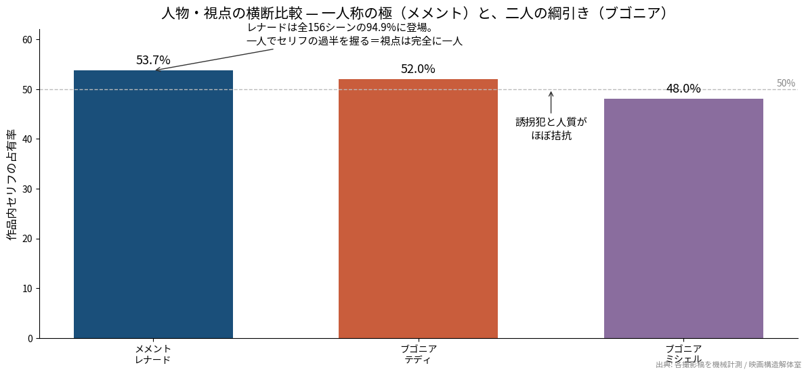
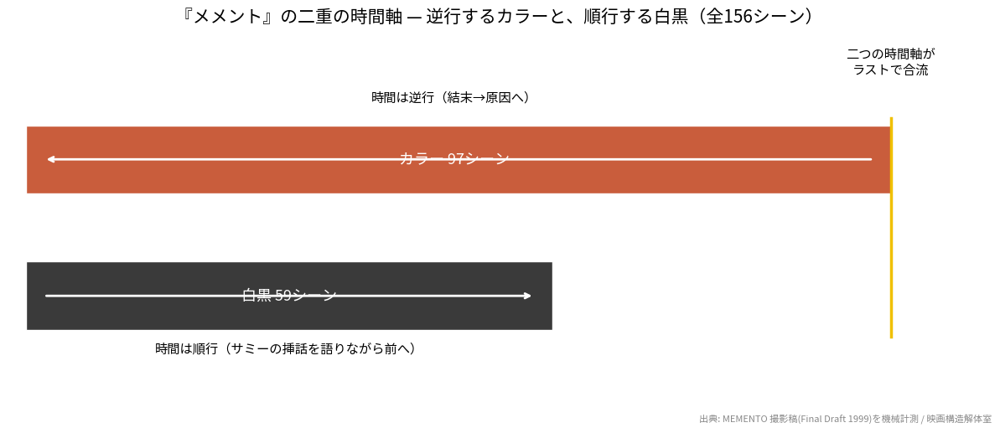

映画構造解体室 #02 — Structural Autopsy
※結末・ツイストまで全部書いています。鑑賞後にどうぞ。
『メメント』の撮影稿(全156シーン)をプログラムで数えてみると、主人公レナードは156シーンのうち148、つまり94.9%のシーンに登場していました。セリフも、全登場人物のうち一人で53.7%を占めます。テディやナタリーではなく、レナードひとりが、この映画のほぼすべてです。ただし面白いのはその中身で、その唯一の視点が、10分ごとに記憶を失う壊れた頭だという点です。観客は最初から最後まで、信用できない一人の男の中に閉じ込められます。
前回の『ブゴニア』は誘拐犯と人質が50対50で拮抗する「二人の綱引き」でした。今回はその正反対、「一人称の極」です。同じ棚(人物・視点)で並べると、映画が「誰の物語か」をどう設計するかの振れ幅が見えてきます。これが毎回同じ5つの角度で解体しておく狙いです。
数字はすべて公開されている脚本PDF(Script Slug掲載、1999年の撮影稿)を実際に数えたもの。図や数字は、出典を書いてもらえれば引用歓迎です。
レナードは、妻を殺した犯人「ジョン・G」を探して復讐しようとしています。ただし彼は事件のショックで前向性健忘になり、新しい記憶を数分しか保てません。だから手がかりをポラロイド写真とメモ、そして体中のタトゥーに刻んで生きています。彼を助けるらしい男テディ、事情のありそうな女ナタリー。話が進むほど、彼のメモが誰かに操作され、復讐の相手がすり替えられていることが見えてきます。そして結末で明かされるのは、レナードが繰り返し語ってきた「サミー・ジャンキス」という別の健忘症患者の話が、実は彼自身の物語の投影で、彼はとっくに復讐を終えていて、忘れるために自分で標的を作り続けている、という事実です。原作はジョナサン・ノーランの短編、監督・脚本はクリストファー・ノーランです。
本題の前に、いちばん有名な物差しである三幕構成を当ててみます。いらない方は次の章へどうぞ。
ところが『メメント』は、三幕構成がきれいに“壊れて”見える珍しい作品です。ふつう三幕なら、クライマックス(復讐の達成)は終盤に来ます。でもこの映画はカラーのシーンが時間を逆行するので、上映順ではいちばん最初に、レナードがテディを撃つ場面 — つまり物語の終点 — が置かれています。時系列に並べ直せば「事件→捜索→復讐」という素直な三幕なのに、ノーランはそれを結末から先頭へ、ブロックごとに裏返して並べています。観客が「幕」を感じられないように作られている、という言い方もできます。だからこの作品で意味を持つ地図は、幕の比率ではなく「時間をどう編んだか」の方です。それは切り口4で数えます。
ここからが本題です。どの作品でも同じ5つの角度(人物・視点/構造/モチーフ・語彙/時間/トーン)で見ていきます。
数字が極端です。レナードは156シーン中148に登場(94.9%)、セリフの占有率は53.7%で、彼を映さないシーンはたった8つ。しかも語り(ボイスオーバー)はほぼ全部レナードのもので、観客が受け取る情報は、彼が見て・彼が考えたことに限られます。『ブゴニア』が二人の視点を綱引きさせたのに対し、ここには綱引きの相手がいません。徹底して一人称です(図2)。

その一人称の中身も徹底しています。他の登場人物 — テディもナタリーもバートも — は、レナードの前にだけ現れて、レナードがいなくなると画面から消えます。彼らが裏で何を企んでいるかを、観客はレナードと同じで最後まで直接は見せてもらえません。テディはある場面でこう言い放ちます。「お前は自分の写真から名前を読んだだけだ。お前は俺を知らないし、自分が誰かも知らない」。観客もまた、レナードの写真とメモ越しにしか世界を知りません。登場人物の配置そのものが、一人の頭の壁になっているわけです。
問題は、その一人称が信用できないことです。レナード自身がこう説明します。「記憶は部屋の形や車の色を変えてしまう。記憶は記録じゃない、解釈なんだ」。彼は記憶を信じず、事実(タトゥーとメモ)だけを頼りにすると宣言します。「記憶じゃなく事実。それが捜査のやり方だ」。ところが映画が見せるのは、その“事実”こそ本人やテディやナタリーの手で書き換えられていく様子です。観客はレナードの頭に閉じ込められたまま、その頭が外から編集されるのを見せられる。一人称に閉じ込めることと、その一人称を信用できなくすること。この二つを同時にやるために、94.9%という登場率が要る、というのが数字の読みです。
普通の映画の折り返し地点には、事件や決断が置かれます。『メメント』の背骨は幕ではなく、二本の別々の時間軸です。カラーのシーン(97本)と白黒のシーン(59本)が交互に編み込まれ、ラストで一点に合流します。白黒はモーテルの一室でレナードが電話で「サミー・ジャンキス」の話を延々語る、いわば解説のパート。カラーは彼が街で復讐相手を追う、体験のパート。この二本が最後に出会う瞬間 — 白黒がカラーに転じ、サミーの話が実は自分の話だったと反転する瞬間 — が、この脚本の本当のクライマックスです。幕で測るのではなく、二本の線がいつ交わるかで測る構造になっています。
繰り返される単語を数えると、この映画が何に取り憑かれているかが出ます。「remember(思い出す/覚えておく)」は77回、「memory/memories」で29回、「fact(s)」31回、「note(s)」43回。記憶をめぐる語がとにかく多い。そして記憶の“外部化”の道具 — 「tattoo(タトゥー)」40回、「photo(写真)」35回 — が、記憶そのものと同じくらいの密度で出てきます。レナードは覚えられないぶんを体と紙に書き出して生きている、それが語彙の分布にそのまま表れています。
いちばん示唆的なのは「sammy」で、なんと123回。全編で最も連呼される固有名詞が、実在するのかも怪しい別人の名前なんです。白黒パートでレナードは電話越しにサミーの逸話を繰り返し語り、「サミーの話は自分の状況を理解するのに役立つ」と言います。結末を知ってから数えると、この123回は「自分の物語を他人の名前で語り続けた回数」ということになります。ちなみにサミーの検査場面では医者の「これはテストだよ、サミー」という同じ一言が、カットを変えて何度も反復されます。反復それ自体が、記憶を作れない人間の時間の描写になっています。
『メメント』の時間設計はほぼ発明の域です。カラーの97シーンは時間が逆行します。各ブロックの冒頭は、前のブロックの結末につながっている。つまり観客は、レナードと同じで「今の出来事の原因を知らないまま」次々に前へ戻される。一方、白黒の59シーンは順行で、サミーの話を語りながら普通に前へ進みます。逆行と順行が交互に組まれ、最後に合流する(図1)。

しかもノーランは、どちらが逆行でどちらが順行かを字幕で説明しません。色(カラーか白黒か)だけが時制の目印です。『ブゴニア』のカウントダウン字幕が「等間隔を装って実は偏っていた」時計だったのに対し、『メメント』の時計は二つあって、片方は逆回り、案内表示は一切なし。観客に「時間の分からなさ」をそのまま体験させる設計です。
演出のいちばんの発明は、白黒とカラーの使い分けが「見た目の気分」ではなく「時間の向き」を担っていることです。白黒=順行=説明的(モーテルでの独白、サミーの逸話、事実の整理)。カラー=逆行=体験的(街での追跡、暴力、混乱)。ふつう白黒は回想や過去の記号として使われますが、ここでは逆で、白黒のほうが“現在から素直に前へ進む”時間です。観客はしばらく、どちらが過去でどちらが今かすら掴めません。色という一番わかりやすい記号を、一番わかりにくい使い方でひっくり返す。この居心地の悪さが、記憶を失った人間の主観に観客を近づけます。
ここからは編集部の解釈です。唯一の正解ではないので、別の束ね方をしてもらって構いません。 あくまで一例として。
5つの切り口を一本にまとめると、『メメント』は「信頼できない語り手を、説明ではなく体験として観客に背負わせる装置」に見えてきます。ふつう「信頼できない語り手」は、最後に種明かしされて観客が驚く、という使われ方をします。でもこの映画は、種明かしを待たせません。94.9%の一人称(切り口1)で観客をレナードの頭に閉じ込め、逆行する時間(切り口4)で「原因を知らないまま結果を見る」彼の状態を追体験させ、色の反転(切り口5)で現在と過去の区別を奪う。そのうえで、最も連呼される名前(切り口3)が実は自分自身だったと明かす。観客は「レナードが騙されている」のを外から見るのではなく、レナードと同じ手つきで自分自身を騙す側に回されます。
前回の『ブゴニア』と並べると対照が効きます。ブゴニアは「二人の綱引き」で、観客はどちらに賭けるか選べた。メメントは「一人の閉じた頭」で、観客に選択肢はなく、その頭ごと編集される。人物・視点の棚にこの二本を置くと、「観客をどこに立たせるか」という設計の両極が見えます。次回のダンケルク(主人公不在の群像)を足すと、この棚は「一人/二人/大勢」の三点で揃います。
そして結末のひとつまみ。レナードは記憶を作れないので、復讐を遂げても数分で忘れます。だから彼は、忘れられるように、自分で次の標的を用意し続ける。彼のあの説明 — 記憶は解釈であって記録ではない — は、被害者の言い訳ではなく、加害を忘れ続けるための道具でもあった、という読み方ができます。一人称に閉じ込める設計は、その自己欺瞞に観客を“共犯”させるためだった、と。
脚本がわざと答えを保留している点も、置いておきます。
シーン数・登場率・語数・語彙頻度・カラー/白黒の分類はすべて、公開脚本PDF(Script Slug、教育目的のfair use)を機械計測したものです。本文中のセリフの引用は同PDF(1999年撮影稿)から訳出しました。計測データ(JSON)は希望者に公開します。反論・再計測は歓迎です。図表・数値は「映画構造解体室 / Structural Autopsy」のクレジット明記で引用自由です。
| 指標 | 数値 |
|---|---|
| 総シーン数 | 156 |
| カラー(逆行)/白黒(順行) | 97 / 59 |
| レナードの登場シーン | 148(94.9%) |
| レナードのセリフ占有率 | 53.7% |
| 白黒のサミー挿話シーン | 24 |
| 語彙: remember / sammy | 77回 / 123回 |
| 語彙: tattoo / photo / note(s) | 40 / 35 / 43回 |
次回予告: 映画構造解体室 #03 は『ダンケルク』。主人公不在の群像を、同じ人物・視点の棚で数えます。自作脚本の構造診断「脚本ドック」も準備中です。